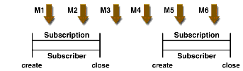
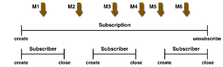
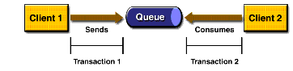
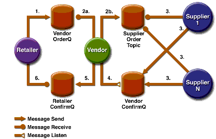

Creating Robust JMS Applications
This section explains how to use features of the JMS API to achieve the level of reliability and performance your application requires. Many people choose to implement JMS applications because they cannot tolerate dropped or duplicate messages and require that every message be received once and only once. The JMS API provides this functionality.
The most reliable way to produce a message is to send a
PERSISTENTmessage within a transaction. JMS messages arePERSISTENTby default. A transaction is a unit of work into which you can group a series of operations, such as message sends and receives, so that the operations either all succeed or all fail. For details, see Specifying Message Persistence and Using JMS API Local Transactions.The most reliable way to consume a message is to do so within a transaction, either from a queue or from a durable subscription to a topic. For details, see Creating Temporary Destinations, Creating Durable Subscriptions, and Using JMS API Local Transactions.
For other applications, a lower level of reliability can reduce overhead and improve performance. You can send messages with varying priority levels--see Setting Message Priority Levels--and you can set them to expire after a certain length of time (see Allowing Messages to Expire).
The JMS API provides several ways to achieve various kinds and degrees of reliability. This section divides them into two categories:
The following sections describe these features as they apply to JMS clients. Some of the features work differently in J2EE applications; in these cases, the differences are noted here and are explained in detail in Using the JMS API in a J2EE Application.
This section includes three sample programs, which you can find in the directory
<INSTALL>/j2eetutorial14/examples/jms/advanced/src/, along with a utility class calledSampleUtilities.java.To compile the programs in advance, go to the
<INSTALL>/j2eetutorial14/examples/jms/advanceddirectory and use the followingasanttarget:Using Basic Reliability Mechanisms
The basic mechanisms for achieving or affecting reliable message delivery are as follows:
- Controlling message acknowledgment: You can specify various levels of control over message acknowledgment.
- Specifying message persistence: You can specify that messages are persistent, meaning that they must not be lost in the event of a provider failure.
- Setting message priority levels: You can set various priority levels for messages, which can affect the order in which the messages are delivered.
- Allowing messages to expire: You can specify an expiration time for messages so that they will not be delivered if they are obsolete.
- Creating temporary destinations: You can create temporary destinations that last only for the duration of the connection in which they are created.
Controlling Message Acknowledgment
Until a JMS message has been acknowledged, it is not considered to be successfully consumed. The successful consumption of a message ordinarily takes place in three stages.
In transacted sessions (see Using JMS API Local Transactions), acknowledgment happens automatically when a transaction is committed. If a transaction is rolled back, all consumed messages are redelivered.
In nontransacted sessions, when and how a message is acknowledged depend on the value specified as the second argument of the
createSessionmethod. The three possible argument values are as follows:
Session.AUTO_ACKNOWLEDGE: The session automatically acknowledges a client's receipt of a message either when the client has successfully returned from a call toreceiveor when theMessageListenerit has called to process the message returns successfully. A synchronous receive in anAUTO_ACKNOWLEDGEsession is the one exception to the rule that message consumption is a three-stage process as described earlier.In this case, the receipt and acknowledgment take place in one step, followed by the processing of the message.
Session.CLIENT_ACKNOWLEDGE: A client acknowledges a message by calling the message'sacknowledgemethod. In this mode, acknowledgment takes place on the session level: Acknowledging a consumed message automatically acknowledges the receipt of all messages that have been consumed by its session. For example, if a message consumer consumes ten messages and then acknowledges the fifth message delivered, all ten messages are acknowledged.Session.DUPS_OK_ACKNOWLEDGE: This option instructs the session to lazily acknowledge the delivery of messages. This is likely to result in the delivery of some duplicate messages if the JMS provider fails, so it should be used only by consumers that can tolerate duplicate messages. (If the JMS provider redelivers a message, it must set the value of theJMSRedeliveredmessage header totrue.) This option can reduce session overhead by minimizing the work the session does to prevent duplicates.If messages have been received from a queue but not acknowledged when a session terminates, the JMS provider retains them and redelivers them when a consumer next accesses the queue. The provider also retains unacknowledged messages for a terminated session that has a durable
TopicSubscriber. (See Creating Durable Subscriptions.) Unacknowledged messages for a nondurableTopicSubscriberare dropped when the session is closed.If you use a queue or a durable subscription, you can use the
Session.recovermethod to stop a nontransacted session and restart it with its first unacknowledged message. In effect, the session's series of delivered messages is reset to the point after its last acknowledged message. The messages it now delivers may be different from those that were originally delivered, if messages have expired or if higher-priority messages have arrived. For a nondurableTopicSubscriber, the provider may drop unacknowledged messages when its session is recovered.The sample program in the next section demonstrates two ways to ensure that a message will not be acknowledged until processing of the message is complete.
A Message Acknowledgment Example
The
AckEquivExample.javaprogram in the directory<INSTALL>/j2eetutorial14/examples/jms/advanced/src/shows how both of the following two scenarios ensure that a message will not be acknowledged until processing of it is complete:With a message listener, the automatic acknowledgment happens when the
onMessagemethod returns--that is, after message processing has finished. With a synchronous receiver, the client acknowledges the message after processing is complete. (If you useAUTO_ACKNOWLEDGEwith a synchronous receive, the acknowledgment happens immediately after thereceivecall; if any subsequent processing steps fail, the message cannot be redelivered.)The program contains a
SynchSenderclass, aSynchReceiverclass, anAsynchSubscriberclass with aTextListenerclass, aMultiplePublisherclass, amainmethod, and a method that runs the other classes' threads.The program uses the following objects:
jms/ConnectionFactory,jms/Queue, andjms/Topic: resources that you created in Creating JMS Administered Objectsjms/ControlQueue: an additional queuejms/DurableConnectionFactory: a connection factory with a client ID (see Creating Durable Subscriptions, for more information)Use the Admin Console to create the new queue and connection factory as follows:
- Create a physical destination of type
queuewith the nameControlQueueP.- Create a destination resource with the name
jms/ControlQueueand typejavax.jms.Queue. Find theNameproperty and give it the valueControlQueueP.- Create a connection factory with the name
jms/DurableConnectionFactoryand the typejavax.jms.ConnectionFactory. Find the property namedClientIdand give it the valueMyID.You can also create all the resources needed for these examples with the following
asanttarget:If you did not do so previously, compile the source file:
To package the program, follow the instructions in Packaging the Clients, except for the values listed in Table 33-5.
To run the program, use the following command:
The program output looks something like this:
Queue name is jms/ControlQueue Queue name is jms/Queue Topic name is jms/Topic Connection factory name is jms/DurableConnectionFactory SENDER: Created client-acknowledge session SENDER: Sending message: Here is a client-acknowledge message RECEIVER: Created client-acknowledge session RECEIVER: Processing message: Here is a client-acknowledge message RECEIVER: Now I'll acknowledge the message PUBLISHER: Created auto-acknowledge session SUBSCRIBER: Created auto-acknowledge session PUBLISHER: Receiving synchronize messages from jms/ ControlQueue; count = 1 SUBSCRIBER: Sending synchronize message to jms/ControlQueue PUBLISHER: Received synchronize message; expect 0 more PUBLISHER: Publishing message: Here is an auto-acknowledge message 1 PUBLISHER: Publishing message: Here is an auto-acknowledge message 2 SUBSCRIBER: Processing message: Here is an auto-acknowledge message 1 PUBLISHER: Publishing message: Here is an auto-acknowledge message 3 SUBSCRIBER: Processing message: Here is an auto-acknowledge message 2 SUBSCRIBER: Processing message: Here is an auto-acknowledge message 3After you run the program, you can delete the physical destination
ControlQueuePand the destination resourcejms/ControlQueue.Specifying Message Persistence
The JMS API supports two delivery modes for messages to specify whether messages are lost if the JMS provider fails. These delivery modes are fields of the
DeliveryModeinterface.
- The
PERSISTENTdelivery mode, which is the default, instructs the JMS provider to take extra care to ensure that a message is not lost in transit in case of a JMS provider failure. A message sent with this delivery mode is logged to stable storage when it is sent.- The
NON_PERSISTENTdelivery mode does not require the JMS provider to store the message or otherwise guarantee that it is not lost if the provider fails.You can specify the delivery mode in either of two ways.
- You can use the
setDeliveryModemethod of theMessageProducerinterface to set the delivery mode for all messages sent by that producer. For example, the following call sets the delivery mode toNON_PERSISTENTfor a producer:
producer.setDeliveryMode(DeliveryMode.NON_PERSISTENT);- You can use the long form of the
sendor thepublishmethod to set the delivery mode for a specific message. The second argument sets the delivery mode. For example, the followingsendcall sets the delivery mode formessagetoNON_PERSISTENT:
producer.send(message, DeliveryMode.NON_PERSISTENT, 3,
10000);The third and fourth arguments set the priority level and expiration time, which are described in the next two subsections.
If you do not specify a delivery mode, the default is
PERSISTENT. Using theNON_PERSISTENTdelivery mode may improve performance and reduce storage overhead, but you should use it only if your application can afford to miss messages.Setting Message Priority Levels
You can use message priority levels to instruct the JMS provider to deliver urgent messages first. You can set the priority level in either of two ways.
- You can use the
setPrioritymethod of theMessageProducerinterface to set the priority level for all messages sent by that producer. For example, the following call sets a priority level of 7 for a producer:
producer.setPriority(7);- You can use the long form of the
sendor thepublishmethod to set the priority level for a specific message. The third argument sets the priority level. For example, the followingsendcall sets the priority level formessageto 3:
producer.send(message, DeliveryMode.NON_PERSISTENT, 3,
10000);The ten levels of priority range from 0 (lowest) to 9 (highest). If you do not specify a priority level, the default level is 4. A JMS provider tries to deliver higher-priority messages before lower-priority ones but does not have to deliver messages in exact order of priority.
Allowing Messages to Expire
By default, a message never expires. If a message will become obsolete after a certain period, however, you may want to set an expiration time. You can do this in either of two ways.
- You can use the
setTimeToLivemethod of theMessageProducerinterface to set a default expiration time for all messages sent by that producer. For example, the following call sets a time to live of one minute for a producer:
producer.setTimeToLive(60000);- You can use the long form of the
sendor thepublishmethod to set an expiration time for a specific message. The fourth argument sets the expiration time in milliseconds. For example, the followingsendcall sets a time to live of 10 seconds:
producer.send(message, DeliveryMode.NON_PERSISTENT, 3,
10000);If the specified
timeToLivevalue is0, the message never expires.When the message is sent, the specified
timeToLiveis added to the current time to give the expiration time. Any message not delivered before the specified expiration time is destroyed. The destruction of obsolete messages conserves storage and computing resources.Creating Temporary Destinations
Normally, you create JMS destinations--queues and topics--administratively rather than programmatically. Your JMS provider includes a tool that you use to create and remove destinations, and it is common for destinations to be long-lasting.
The JMS API also enables you to create destinations--
TemporaryQueueandTemporaryTopicobjects--that last only for the duration of the connection in which they are created. You create these destinations dynamically using theSession.createTemporaryQueueand theSession.createTemporaryTopicmethods.The only message consumers that can consume from a temporary destination are those created by the same connection that created the destination. Any message producer can send to the temporary destination. If you close the connection that a temporary destination belongs to, the destination is closed and its contents are lost.
You can use temporary destinations to implement a simple request/reply mechanism. If you create a temporary destination and specify it as the value of the
JMSReplyTomessage header field when you send a message, then the consumer of the message can use the value of theJMSReplyTofield as the destination to which it sends a reply. The consumer can also reference the original request by setting theJMSCorrelationIDheader field of the reply message to the value of theJMSMessageIDheader field of the request. For example, anonMessagemethod can create a session so that it can send a reply to the message it receives. It can use code such as the following:producer = session.createProducer(msg.getJMSReplyTo()); replyMsg = session.createTextMessage("Consumer " + "processed message: " + msg.getText()); replyMsg.setJMSCorrelationID(msg.getJMSMessageID()); producer.send(replyMsg);For more examples, see Chapter 34.
Using Advanced Reliability Mechanisms
The more advanced mechanisms for achieving reliable message delivery are the following:
- Creating durable subscriptions: You can create durable topic subscriptions, which receive messages published while the subscriber is not active. Durable subscriptions offer the reliability of queues to the publish/subscribe message domain.
- Using local transactions: You can use local transactions, which allow you to group a series of sends and receives into an atomic unit of work. Transactions are rolled back if they fail at any time.
Creating Durable Subscriptions
To ensure that a pub/sub application receives all published messages, use
PERSISTENTdelivery mode for the publishers. In addition, use durable subscriptions for the subscribers.The
Session.createConsumermethod creates a nondurable subscriber if a topic is specified as the destination. A nondurable subscriber can receive only messages that are published while it is active.At the cost of higher overhead, you can use the
Session.createDurableSubscribermethod to create a durable subscriber. A durable subscription can have only one active subscriber at a time.A durable subscriber registers a durable subscription by specifying a unique identity that is retained by the JMS provider. Subsequent subscriber objects that have the same identity resume the subscription in the state in which it was left by the preceding subscriber. If a durable subscription has no active subscriber, the JMS provider retains the subscription's messages until they are received by the subscription or until they expire.
You establish the unique identity of a durable subscriber by setting the following:
You set the client ID administratively for a client-specific connection factory using the Admin Console.
After using this connection factory to create the connection and the session, you call the
createDurableSubscribermethod with two arguments: the topic and a string that specifies the name of the subscription:String subName = "MySub"; MessageConsumer topicSubscriber = session.createDurableSubscriber(myTopic, subName);The subscriber becomes active after you start the
ConnectionorTopicConnection. Later, you might close the subscriber:The JMS provider stores the messages sent or published to the topic, as it would store messages sent to a queue. If the program or another application calls
createDurableSubscriberusing the same connection factory and its client ID, the same topic, and the same subscription name, the subscription is reactivated, and the JMS provider delivers the messages that were published while the subscriber was inactive.To delete a durable subscription, first close the subscriber, and then use the
unsubscribemethod, with the subscription name as the argument:The
unsubscribemethod deletes the state that the provider maintains for the subscriber.Figures 33-9 and 33-10 show the difference between a nondurable and a durable subscriber. With an ordinary, nondurable subscriber, the subscriber and the subscription begin and end at the same point and are, in effect, identical. When a subscriber is closed, the subscription also ends. Here,
createstands for a call toSession.createConsumerwith aTopicargument, andclosestands for a call toMessageConsumer.close. Any messages published to the topic between the time of the firstcloseand the time of the secondcreateare not consumed by the subscriber. In Figure 33-9, the subscriber consumes messages M1, M2, M5, and M6, but messages M3 and M4 are lost.

Figure 33-9 Nondurable Subscribers and Subscriptions
With a durable subscriber, the subscriber can be closed and re-created, but the subscription continues to exist and to hold messages until the application calls the
unsubscribemethod. In Figure 33-10,createstands for a call toSession.createDurableSubscriber,closestands for a call toMessageConsumer.close, andunsubscribestands for a call toSession.unsubscribe. Messages published while the subscriber is closed are received when the subscriber is created again. So even though messages M2, M4, and M5 arrive while the subscriber is closed, they are not lost.

Figure 33-10 A Durable Subscriber and Subscription
See A J2EE Application That Uses the JMS API with a Session Bean for an example of a J2EE application that uses durable subscriptions. See A Message Acknowledgment Example and the next section for examples of client applications that use durable subscriptions.
A Durable Subscription Example
The
DurableSubscriberExample.javaprogram in the directory<INSTALL>/j2eetutorial14/examples/jms/advanced/src/shows how durable subscriptions work. It demonstrates that a durable subscription is active even when the subscriber is not active. The program contains aDurableSubscriberclass, aMultiplePublisherclass, amainmethod, and a method that instantiates the classes and calls their methods in sequence.The program begins in the same way as any publish/subscribe program: The subscriber starts, the publisher publishes some messages, and the subscriber receives them. At this point, the subscriber closes itself. The publisher then publishes some messages while the subscriber is not active. The subscriber then restarts and receives the messages.
Before you run this program, compile the source file and create a connection factory that has a client ID. If you did not already do so in A Message Acknowledgment Example, perform the following steps:
To package the program, follow the instructions in Packaging the Clients, except for the values listed in Table 33-6.
Use the following command to run the program. The destination is
jms/Topic:The output looks something like this:
Connection factory without client ID is jms/ConnectionFactory Connection factory with client ID is jms/ DurableConnectionFactory Topic name is jms/Topic Starting subscriber PUBLISHER: Publishing message: Here is a message 1 SUBSCRIBER: Reading message: Here is a message 1 PUBLISHER: Publishing message: Here is a message 2 SUBSCRIBER: Reading message: Here is a message 2 PUBLISHER: Publishing message: Here is a message 3 SUBSCRIBER: Reading message: Here is a message 3 Closing subscriber PUBLISHER: Publishing message: Here is a message 4 PUBLISHER: Publishing message: Here is a message 5 PUBLISHER: Publishing message: Here is a message 6 Starting subscriber SUBSCRIBER: Reading message: Here is a message 4 SUBSCRIBER: Reading message: Here is a message 5 SUBSCRIBER: Reading message: Here is a message 6 Closing subscriber Unsubscribing from durable subscriptionUsing JMS API Local Transactions
You can group a series of operations into an atomic unit of work called a transaction. If any one of the operations fails, the transaction can be rolled back, and the operations can be attempted again from the beginning. If all the operations succeed, the transaction can be committed.
In a JMS client, you can use local transactions to group message sends and receives. The JMS API
Sessioninterface providescommitandrollbackmethods that you can use in a JMS client. A transaction commit means that all produced messages are sent and all consumed messages are acknowledged. A transaction rollback means that all produced messages are destroyed and all consumed messages are recovered and redelivered unless they have expired (see Allowing Messages to Expire).A transacted session is always involved in a transaction. As soon as the
commitor therollbackmethod is called, one transaction ends and another transaction begins. Closing a transacted session rolls back its transaction in progress, including any pending sends and receives.In an Enterprise JavaBeans component, you cannot use the
Session.commitandSession.rollbackmethods. Instead, you use distributed transactions, which are described in Using the JMS API in a J2EE Application.You can combine several sends and receives in a single JMS API local transaction. If you do so, you need to be careful about the order of the operations. You will have no problems if the transaction consists of all sends or all receives or if the receives come before the sends. But if you try to use a request/reply mechanism, whereby you send a message and then try to receive a reply to the sent message in the same transaction, the program will hang, because the send cannot take place until the transaction is committed. The following code fragment illustrates the problem:
// Don't do this! outMsg.setJMSReplyTo(replyQueue); producer.send(outQueue, outMsg); consumer = session.createConsumer(replyQueue); inMsg = consumer.receive(); session.commit();Because a message sent during a transaction is not actually sent until the transaction is committed, the transaction cannot contain any receives that depend on that message's having been sent.
In addition, the production and the consumption of a message cannot both be part of the same transaction. The reason is that the transactions take place between the clients and the JMS provider, which intervenes between the production and the consumption of the message. Figure 33-11 illustrates this interaction.

Figure 33-11 Using JMS API Local Transactions
The sending of one or more messages to one or more destinations by client 1 can form a single transaction, because it forms a single set of interactions with the JMS provider using a single session. Similarly, the receiving of one or more messages from one or more destinations by client 2 also forms a single transaction using a single session. But because the two clients have no direct interaction and are using two different sessions, no transactions can take place between them.
Another way of putting this is that the act of producing and/or consuming messages in a session can be transactional, but the act of producing and consuming a specific message across different sessions cannot be transactional.
This is the fundamental difference between messaging and synchronized processing. Instead of tightly coupling the sending and receiving of data, message producers and consumers use an alternative approach to reliability, one that is built on a JMS provider's ability to supply a once-and-only-once message delivery guarantee.
When you create a session, you specify whether it is transacted. The first argument to the
createSessionmethod is abooleanvalue. A value oftruemeans that the session is transacted; a value offalsemeans that it is not transacted. The second argument to this method is the acknowledgment mode, which is relevant only to nontransacted sessions (see Controlling Message Acknowledgment). If the session is transacted, the second argument is ignored, so it is a good idea to specify0to make the meaning of your code clear. For example:The
commitand therollbackmethods for local transactions are associated with the session. You can combine queue and topic operations in a single transaction if you use the same session to perform the operations. For example, you can use the same session to receive a message from a queue and send a message to a topic in the same transaction.You can pass a client program's session to a message listener's constructor function and use it to create a message producer. In this way, you can use the same session for receives and sends in asynchronous message consumers.
The next section provides an example of the use of JMS API local transactions.
A Local Transaction Example
The
TransactedExample.javaprogram in the directory<INSTALL>/j2eetutorial14/examples/jms/advanced/src/demonstrates the use of transactions in a JMS client application. This example shows how to use a queue and a topic in a single transaction as well as how to pass a session to a message listener's constructor function. The program represents a highly simplified e-commerce application in which the following things happen.
- A retailer sends a
MapMessageto the vendor order queue, ordering a quantity of computers, and waits for the vendor's reply:
producer =
session.createProducer(vendorOrderQueue);
outMessage = session.createMapMessage();
outMessage.setString("Item", "Computer(s)");
outMessage.setInt("Quantity", quantity);
outMessage.setJMSReplyTo(retailerConfirmQueue);
producer.send(outMessage);
System.out.println("Retailer: ordered " +
quantity + " computer(s)");
orderConfirmReceiver =
session.createConsumer(retailerConfirmQueue);
connection.start();- The vendor receives the retailer's order message and sends an order message to the supplier order topic in one transaction. This JMS transaction uses a single session, so we can combine a receive from a queue with a send to a topic. Here is the code that uses the same session to create a consumer for a queue and a producer for a topic:
vendorOrderReceiver =
session.createConsumer(vendorOrderQueue);
supplierOrderProducer =
session.createProducer(supplierOrderTopic);The following code receives the incoming message, sends an outgoing message, and commits the session. The message processing has been removed to keep the sequence simple:
inMessage = vendorOrderReceiver.receive();
// Process the incoming message and format the outgoing
// message
...
supplierOrderProducer.send(orderMessage);
...
session.commit();- Each supplier receives the order from the order topic, checks its inventory, and then sends the items ordered to the queue named in the order message's
JMSReplyTofield. If it does not have enough in stock, the supplier sends what it has. The synchronous receive from the topic and the send to the queue take place in one JMS transaction.
receiver = session.createConsumer(orderTopic);
...
inMessage = receiver.receive();
if (inMessage instanceof MapMessage) {
orderMessage = (MapMessage) inMessage;
// Process message
MessageProducer producer =
session.createProducer((javax.jms.Queue)
orderMessage.getJMSReplyTo());
outMessage = session.createMapMessage();
// Add content to message
producer.send(outMessage);
// Display message contents
session.commit();- The vendor receives the replies from the suppliers from its confirmation queue and updates the state of the order. Messages are processed by an asynchronous message listener; this step shows the use of JMS transactions with a message listener.
MapMessage component = (MapMessage) message;
...
orderNumber =
component.getInt("VendorOrderNumber");
Order order =
Order.getOrder(orderNumber).processSubOrder(component);
session.commit();- When all outstanding replies are processed for a given order, the vendor message listener sends a message notifying the retailer whether it can fulfill the order.
javax.jms.Queue replyQueue =
(javax.jms.Queue) order.order.getJMSReplyTo();
MessageProducer producer =
session.createProducer(replyQueue);
MapMessage retailerConfirmMessage =
session.createMapMessage();
// Format the message
producer.send(retailerConfirmMessage);
session.commit();- The retailer receives the message from the vendor:
inMessage =
(MapMessage) orderConfirmReceiver.receive();Figure 33-12 illustrates these steps.

Figure 33-12 Transactions: JMS Client Example
The program contains five classes:
Retailer,Vendor,GenericSupplier,VendorMessageListener, andOrder. The program also contains amainmethod and a method that runs the threads of theRetailer,Vendor, and two supplier classes.All the messages use the
MapMessagemessage type. Synchronous receives are used for all message reception except for the case of the vendor processing the replies of the suppliers. These replies are processed asynchronously and demonstrate how to use transactions within a message listener.At random intervals, the
Vendorclass throws an exception to simulate a database problem and cause a rollback.All classes except
Retaileruse transacted sessions.The program uses three queues named
jms/AQueue,jms/BQueue, andjms/CQueue, and one topic namedjms/OTopic. Before you run the program, do the following:
- Compile the program if you did not do so previously:
asant build- Create the necessary resources:
- In the Admin Console, create three physical destinations of type
queuenamedAQueueP,BQueueP, andCQueueP.- Create a physical destination of type
topicnamedOTopicP.- Create three destination resources with the names
jms/AQueue,jms/BQueue, andjms/CQueue, all of typejavax.jms.Queue. For each, set itsNameproperty to the valueAQueueP,BQueueP, orCQueueP, respectively.- Create a destination resource with the name
jms/OTopicof typejavax.jms.Topic. Set itsNameproperty to the valueOTopicP.To package the program, follow the instructions in Packaging the Clients, except for the values listed in Table 33-7.
Run the program, specifying the number of computers to be ordered. To order three computers, use the following command:
The output looks something like this:
Quantity to be ordered is 3 Retailer: ordered 3 computer(s) Vendor: Retailer ordered 3 Computer(s) Vendor: ordered 3 monitor(s) and hard drive(s) Monitor Supplier: Vendor ordered 3 Monitor(s) Monitor Supplier: sent 3 Monitor(s) Monitor Supplier: committed transaction Vendor: committed transaction 1 Hard Drive Supplier: Vendor ordered 3 Hard Drive(s) Hard Drive Supplier: sent 1 Hard Drive(s) Vendor: Completed processing for order 1 Hard Drive Supplier: committed transaction Vendor: unable to send 3 computer(s) Vendor: committed transaction 2 Retailer: Order not filled Retailer: placing another order Retailer: ordered 6 computer(s) Vendor: JMSException occurred: javax.jms.JMSException: Simulated database concurrent access exception javax.jms.JMSException: Simulated database concurrent access exception at TransactedExample$Vendor.run(Unknown Source) Vendor: rolled back transaction 1 Vendor: Retailer ordered 6 Computer(s) Vendor: ordered 6 monitor(s) and hard drive(s) Monitor Supplier: Vendor ordered 6 Monitor(s) Hard Drive Supplier: Vendor ordered 6 Hard Drive(s) Monitor Supplier: sent 6 Monitor(s) Monitor Supplier: committed transaction Hard Drive Supplier: sent 6 Hard Drive(s) Hard Drive Supplier: committed transaction Vendor: committed transaction 1 Vendor: Completed processing for order 2 Vendor: sent 6 computer(s) Retailer: Order filled Vendor: committed transaction 2When you have finished with this sample application, use the Admin Console to delete the physical destinations
AQueueP,BQueueP,CQueueP, andOTopicP, and the destination resourcesjms/AQueue,jms/BQueue,jms/CQueue, andjms/OTopic.Use the following command to remove the class files:
If you wish, you can manually remove the client JAR files.
All of the material in The J2EE(TM) 1.4 Tutorial is copyright-protected and may not be published in other works without express written permission from Sun Microsystems.